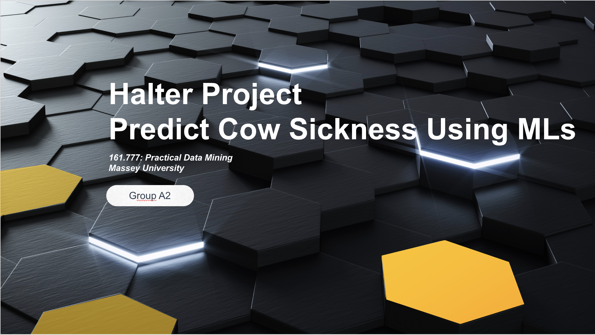

Project Type: Halter (Biotech)
Description: This project aimed to predict cow sickness for early detection, helping improve livestock health and farm efficiency. A dataset of 20,154,577 observations involving 10181 cows is used for training models and a sub dataset of 783,494 observations with 409 cows is used for testing. Firstly, in data cleaning upon exploring the data I choose pre and post 14 days window toward the occurrence of sickness and perform log transformation to skewness input variables. Next, I create 1 binary target variable health condition, 1 sickness seasonal variable and 18 cow behavior and sensor variables considering the relative changes to mobs or farm in feature engineering. Then the data are randomly divided into training and validation data sets in a ratio of 50% to 50%. A total of five machine learning models have been used namely Decision Tree (DT), Gradient Boosting (GB), Logistic Regression (LG), Neural Network (NN) and Support Vector Machines (SVM). The evaluation metrics are calculated for determining how well the classifiers have performed, which include misclassification rate, recall, specificity, and precision. Among all the models, Neural Network outperforms the other models with the misclassification rate of 0.30, recall of 0.26, specificity of 0.93 and precision of 0.66.
Technologies Used: Python, SAS
Outcome: Enabled early intervention for sick livestock through effective data-driven detection models.